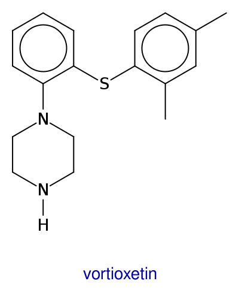
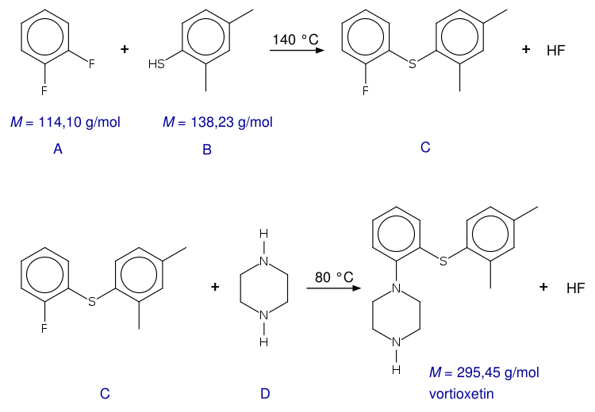
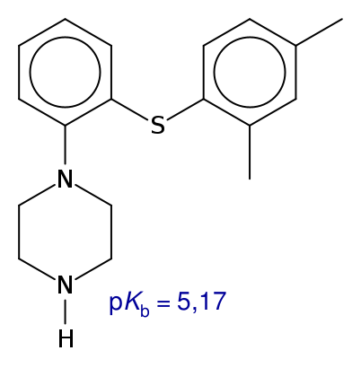
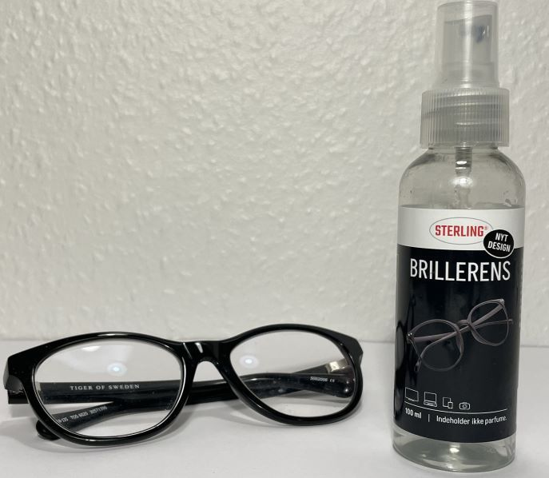
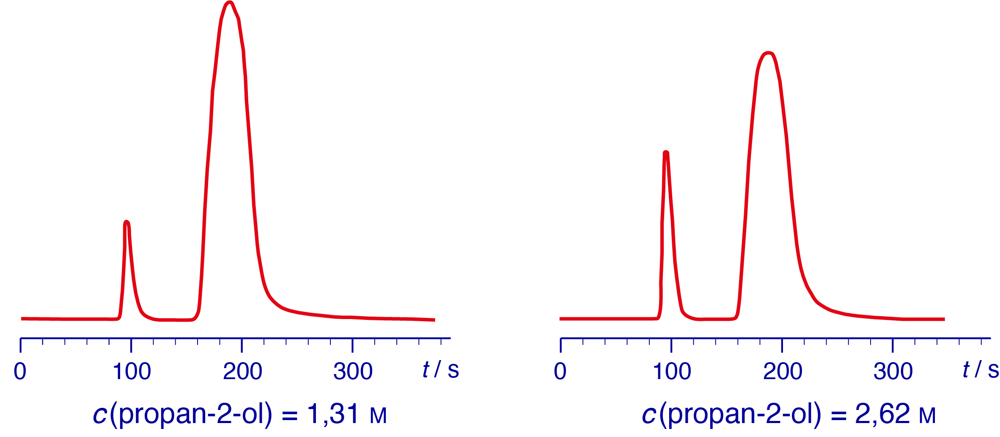
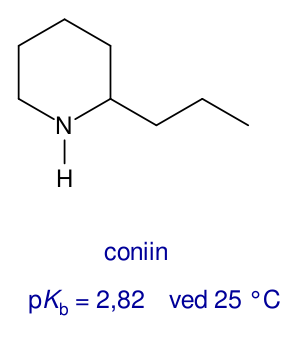
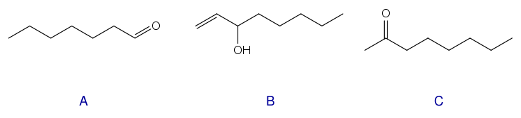
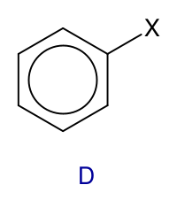
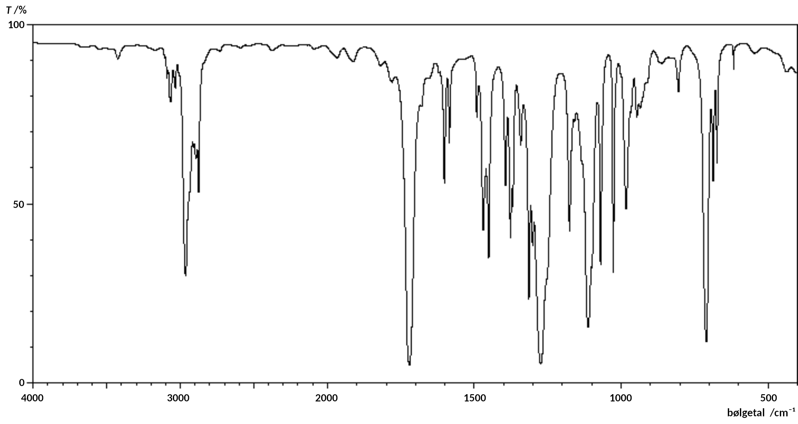
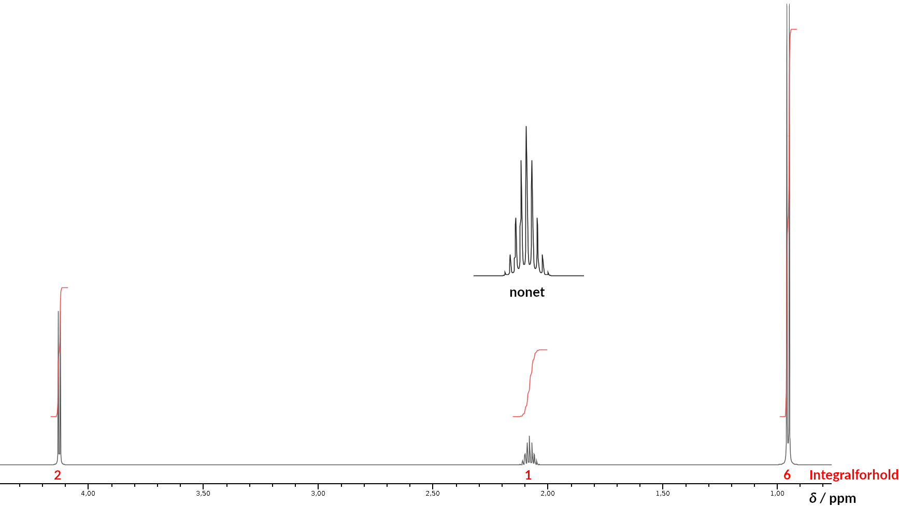

Studentereksamen
Dette prøvesæt er omfattet af ophavsretten, jf. ophavsretslovens § 1.
Prøvesættet må alene anvendes til den på prøvesættet anførte prøve.
Al anden anvendelse af prøvesættet, herunder visning eller deling f.eks. via internettet, sociale medier, portaler og bøger, udgør en krænkelse af Børne- og Undervisningsministeriets og evt. tredjemands ophavsret og er ikke tilladt.
Overtrædelse af ophavsretten kan være erstatningspådragende og/eller strafbart.
Prøvesættet kan dog, efter at prøven er afsluttet, anvendes til undervisningsbrug på uddannelser m.v. omfattet af den lovgivning, som Styrelsen for Undervisning og Kvalitet administrerer.
Kilder
Opgave 1Introduktionsbillede: Colourbox
Figur 1.1: Opgavekommissionen i kemi STX 2023/24
Figur 1.2: Opgavekommissionen i kemi STX 2023/24
Figur 1.3: Opgavekommissionen i kemi STX 2023/24
Figur 1.4: SDBSWeb : https://sdbs.db.aist.go.jp (National Institute of Advanced Industrial Science and Technology, 21. September 2023) &
Opgavekommissionen i kemi STX 2023/24
Figur 1.5: Opgavekommissionen i kemi STX 2023/24
Film: Opgavekommissionen i kemi STX 2023/24
Opgave 2
Introduktionsbillede: Opgavekommissionen i kemi STX 2023/24
Figur 2.1: Opgavekommissionen i kemi STX 2023/24
Figur 2.2: Opgavekommissionen i kemi STX 2023/24
Film: Opgavekommissionen i kemi STX 2023/24
Opgave 3
Introduktionsbillede: Opgavekommissionen i kemi STX 2023/24
Figur 3.1: Opgavekommissionen i kemi STX 2023/24
Figur 3.2: Opgavekommissionen i kemi STX 2023/24
Figur 3.3: Opgavekommissionen i kemi STX 2023/24
Figur 3.4: Opgavekommissionen i kemi STX 2023/24
Opgave 4
Introduktionsbillede: Colourbox
Opgave 4: Nanopartikler til vandrensning
| Nanopartikler af magnesiumoxid er lette at fremstille og har egenskaber, der gør dem anvendelige, fx i elektroniske komponenter, i optiske fibre og i brandhæmmende materialer. Egenskaberne afhænger blandt andet af partiklernes størrelse og form. For nylig har en gruppe forskere fremstillet nanostænger af magnesiumoxid, som kan bruges til at fjerne giftige tungmetaller fra spildevand. |
a) |
Opskriv den kemiske formel for magnesiumnitrat. |
Fældningen af magnesiumhydroxid kan beskrives ved ligevægten i figur 4.1.
Figur 4.1
b) |
Gør rede for, i hvilken retning ligevægten i figur 4.1 forskydes, hvis pH sænkes. |
Det udfældede magnesiumhydroxid opvarmes til 750 °C, hvorved nanopartiklerne af magnesiumoxid dannes. Ligevægten i figur 4.2 indstiller sig.
Figur 4.2
c) |
Beregn ΔH° og ΔS° for reaktionen vist i figur 4.2. Kommenter resultaterne i forhold til reaktionsskemaet. |
Reaktionen gennemføres ved 750 °C, hvor reaktionen er næsten fuldstændig.
For at spare på energien, vil man undersøge, om reaktionen kan gennemføres ved en lavere temperatur. Reaktionen gennemføres ved et konstant partialtryk af vand på 0,030 bar.
| d) | Beregn den laveste temperatur, hvor reaktionen i figur 4.2 kan forløbe spontant, når partialtrykket af vand er 0,030 bar. |
Opgave 3: Vortioxetin - et lægemiddel dannet ved klik-kemi
| I 2022 fik den danske kemiker Morten Meldal Nobelprisen i kemi sammen med to amerikanske forskere for deres opdagelse af klik-kemi. Klik-kemi benyttes blandt andet til fremstilling af lægemidler fx det antidepressive middel vortioxetin. I 2020 blev der i USA udskrevet mere end 1 million recepter på lægemidlet. I Danmark sælges vortioxetin af Lundbeck under navnet Brintellix®. I figur 3.1 ses strukturformlen for vortioxetin. |
 Morten Meldal |
|  |
| a) | Marker aminogrupperne i vortioxetin, og angiv for hver gruppe, om den er primær, sekundær eller tertiær. |
I 2017 fandt Jacobsen, Meldal og Diness fra Københavns Universitet ud af, at vortioxetin kan fremstilles i en to-trinsreaktion, der kan betragtes som en klik-reaktion. Reaktionsskemaerne for de to trin er vist i figur 3.2.
|  |
Figur 3.2
I et laboratorium fremstilles vortioxetin ud fra 228 mg A og 138 mg B. Stof D er tilsat i overskud. Der fremstilles 136 mg vortioxetin.
b) |
Beregn udbyttet af vortioxetin i procent af det teoretisk mulige. |
Nedbrydningen af vortioxetin blev undersøgt ved at give 18 raske, japanske mænd hver 1 tablet med 10 mg vortioxetin. I tiden efter indtagelsen af tabletten blev koncentrationen af vortioxetin målt i blodet. Resultaterne fremgår af excelfilen nedenfor.
Excelfil kinetikdata vortioxetin
c) |
Vis, at nedbrydningen af vortioxetin er af 1. orden med hensyn til vortioxetin, efter den maksimale koncentration af vortioxetin er opnået. |
|  |
Grafen i figur 3.4 viser logD for vortioxetin som funktion af pH i vandfasen.
d) |
Forklar ændringen i D for vortioxetin, når pH ændres fra 2 til 12. |
Opgave 2: Brillerens
| Brillerens bruges til at fjerne snavs og fedtpletter fra brilleglas. Et bestemt produkt indeholder ifølge producenten mellem 10 og 30 volumenprocent propan-2-ol. En elev ønsker at bestemme indholdet af propan-2-ol i Brillerens kvantitativt. |
 |
Til den kvantitative bestemmelse af propan-2-ol fremstilles en række standardopløsninger. Fremstillingen af en af opløsningerne er vist i filmen nedenfor. |
|
| a) | Beregn stofmængdekoncentrationen af propan-2-ol i den fremstillede standardopløsning |
Eleven benytter gaschromatografi til undersøgelsen. Princippet i analysen er, at en lille portion af en prøve opvarmes og føres igennem en kolonne af bæregassen helium. Kolonnen er således den stationære fase, og helium er den mobile fase. Molekylerne kommer ud af kolonnen til forskellige tider, kaldet retentionstider. Der udskrives et chromatogram, hvor retentionstiden er angivet på 1. aksen. For hver top i chromatogrammet bestemmes et arealtal, der er proportionalt med volumenprocenten.
|  |
| b) | Gør rede for, hvordan toppene i chromatogrammerne kan tilordnes propan-2-ol og vand. |
Brillerens analyseres ved gaschromatografi på samme måde som standardopløsningerne. Arealtal for toppene for propan-2-ol bestemmes for alle standardopløsningerne. Der tegnes en standardkurve, som er vist i figur 2.2.
Densiteten for propan-2-ol 0,781 g/mL ved 25 °C.
| c) | Bestem indholdet af propan-2-ol i Brillerens. Angiv resultatet i volumenprocent. |
Opgave 1: Kødædende planter
| Sarracenia er en slægt af kødædende planter fra Nordamerika. Planterne bruger duftstoffer til at lokke insekter ned i deres tragtformede blade. Her lammes insekterne af gift, drukner og fordøjes ved hjælp af enzymer. I flere Sarracenia-arter findes giftstoffet coniin, der har strukturen vist i figur 1.1. |
|  |
Figur 1.1
a) |
Gør rede for, at coniin udviser stereoisomeri. |
En mættet vandig opløsning af coniin har den formelle stofmængdekoncentration 0,067 m ved 25 °C.
b) |
Beregn pH i den mættede vandige opløsning af coniin. |
|  |
De tre duftstoffer i figur 1.2 er fordelt i tre glas, 1, 2 og 3, med et duftstof i hvert glas. Der gennemføres kemiske tests på stofferne, som vist i filmen nedenfor.
| c) | Argumenter for, hvilke af reagensglassene der kan tilordnes stofferne på baggrund af de kemiske tests vist i filmen. |
Duftstoffet D, som også findes i Sarracenia, har stukturen vist i figur 1.3.
|  |
|  |
I figur 1.5 er vist det udsnit af ¹H-NMR-spektret for stof D, som indeholder signaler for H-atomerne i gruppen X. Spektrometerfrekvensen er 600 MHz.
|  |
d) |
Bestem strukturformlen for X-gruppen i stof D. |
Vejledning
| Prøven Opgavesættet består af 4 opgaver med i alt 15 delopgaver. Følgende hjælpemidler forudsættes: DATABOG fysik kemi (F&K Forlaget), 11. udgave (2007) eller senere udgave. Opgavebesvarelsen Din opgavebesvarelse skal afleveres i et samlet dokument, gemt i pdf-format. Bedømmelse Ved den skriftlige prøve lægges der vægt på din evne til at:
Der gives en karakter på baggrund af en helhedsvurdering. |
||||||||||||||||||||||
Kemi A
Tirsdag den 28. maj 2024
Kl. 9.00-14.00